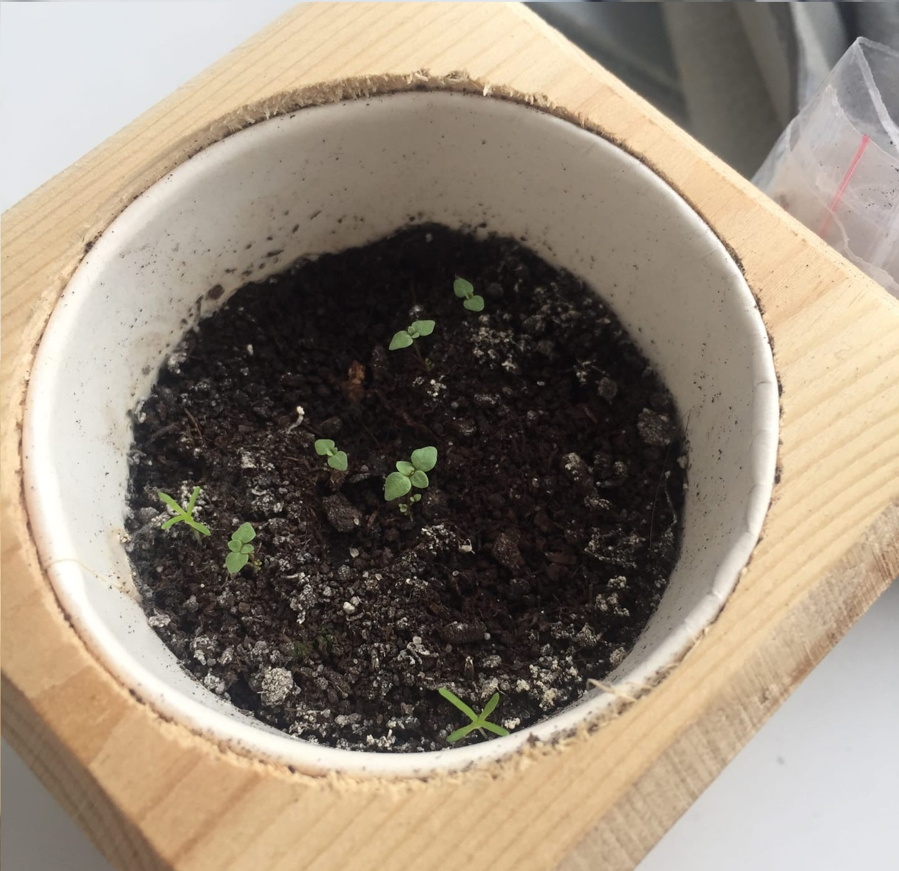
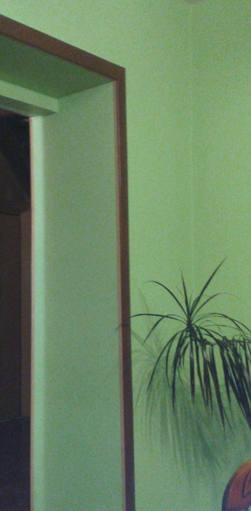
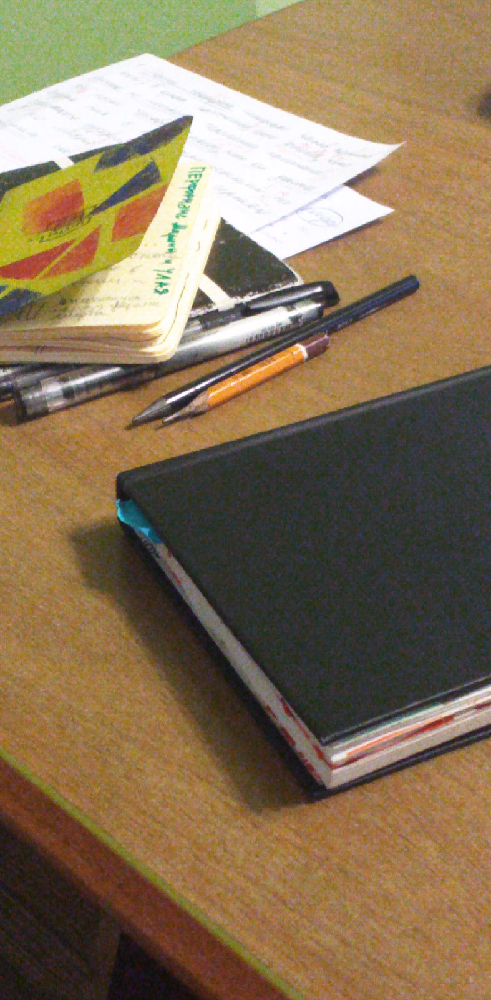
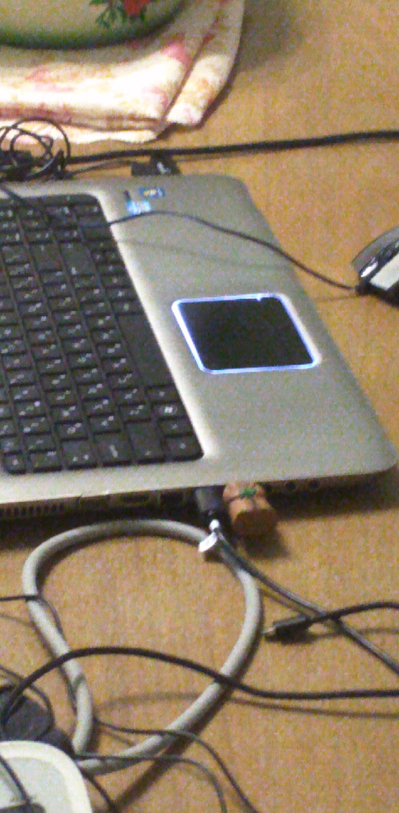
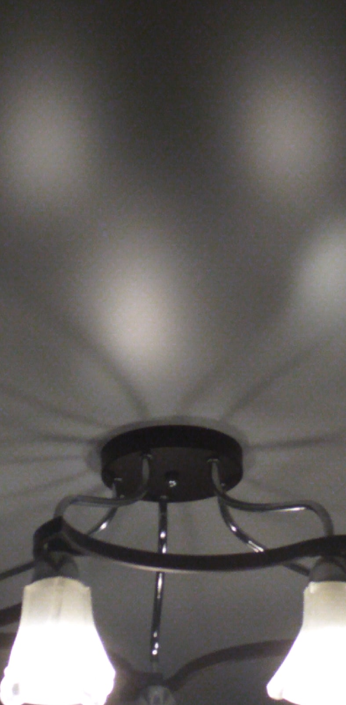
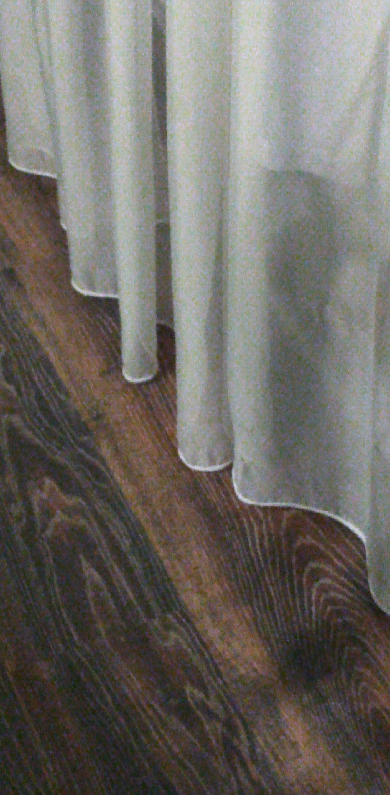
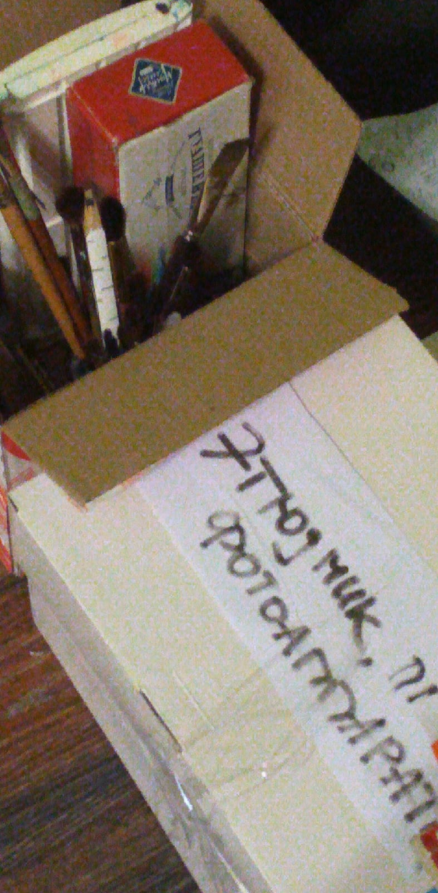
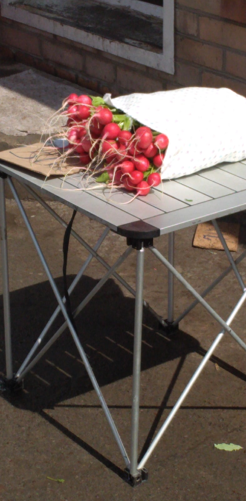

Немного садоводства в домашних условиях
В комнате становится уютнее, когда у вас есть домашние растения. Еще уютнее тогда, когда эти растения выращены вами! Что ж, вот несколько историй домашних садоводов.
Ксения Петренко. В некоторых учебниках по окружающему миру пишут, что фасолевое зернышко можно вырастить, положив его в влажную ватку. Таким способом мне удалось вырастить плантацию мандаринов и хурмы. Сейчас пытаюсь вырастить грейпфрут.
Мадина Тагирова выращивает гранат. C тоненькими листочками скорее всего он, но еще совсем молодой, так что его легко перепутать с сорняком.

Александр Иванов. В этот тяжёлый период я решил не просто спать и есть, а заняться чем-то интересным. Во-первых, я наконец обзавелся гидропоникой, теперь у меня дома растет руккола, базилик и мята. На очереди клубника и может что-то еще необычное.
Пора делать умный дом своими руками
Александр Иванов, продолжение текста из предыдущего раздела.
Следующим этапом я решил освоить нейронные сети и написать какую-нибудь свою. В итоге написал трехслойную сеть, которая с точностью 96% определяет рукописные цифры. Просто нейросетью не впечатлишься, поэтому захотелось ее встроить в микрокомпьютер с сенсорным монитором. Поэтому я купил Raspberry Pi и сенсорный экран. В итоге, разобравшись с подключением и портированием, я получил маленькое устройство, на котором можно стилусом писать цифры, а программа их распознает. Следующей целью является создание своей гидропоники, которая будет программироваться на Raspberry Pi, где бы я мог сам всем управлять. Все необходимые датчики уже закуплены, идёт процесс сборки)
Ну и параллельно я решил подзаработать на бирже, в итоге получил удивительные для себя +107.56% дохода. Осознал, что в период кризиса кто-то разоряется, а кто-то может очень хорошо заработать.
Если подвести итог, то кризис эти конечно плохо и всем тяжело, но именно в это время открываются большие возможности, надо просто их увидеть и идти вперёд.
Александр Терлецкий.
Во время самоизоляции я наконец решил сделал автоматические шторы, компоненты давно купил, но руки все никак не доходили.
ESP8266+шедевральный мотор N20, маленький и мощный. Механизм в том, что на шкив наматывается в два слоя нитка, сложенная в несколько слоев, а посередине к ней прикреплена штора.
Также там стоит датчик холла, который определяет, что нужно остановиться.
Прошивку я поставил ESPHome в связке с homeassistant, гениальная вещь, но для нее нужен постоянно работающий сервер в одной с ней сети, а использовать vps не получилось, потому что я не понял, как сделать так, чтобы ESPHome стучался во внешний интернет, так что на данный момент ищу другое решение.
Николай Моргунов.
Во время самоизоляции мне приходилось несколько раз варить макароны. И было неудобно, потому что из комнаты не слышно кипит ли вода в кастрюле. Поэтому я на базе ардуинки собрал термометр, который громко пищит, если вода уже нагрелась до температуры кипения.
Еще немного историй
На карантине не каждый может найти себе столь увлекательное занятие. У кого-то самое интересное, что он делал на карантине - это почистить свеклу. Кто-то сидит дома один, в маленькой квартире, грустит, занимается физикой и математикой. Кто-то работает целыми днями.
Даша Леднева. Моя жизнь на карантине скучная, разве что только плела афрокосички с цветными нитями и праздновала день рождения с тортом из блинов.
Во время карантина также можно познавать тонкости кулинарии и экспериментировать.
Ксения Щ.
Честно говоря, со мной на карантине не происходило особо интересных историй. Вообще очень тяжело влипать в истории, когда ты находишься в состоянии, близком к овощному, и активизируешься где-то около полуночи, только чтобы в панике досдать задания по дистанционке. Но недавно мне захотелось проявить хозяйственность и сделать какую-нибудь домашнюю выпечку (ну, как делают все остальные люди на карантине). Выбрала самый-самый простой рецепт, а потом переоценила свои силы и решила, что раз рецепт такой простой, я могу одновременно готовить и смотреть сериал. И всё вроде бы шло хорошо, и тесто выглядело так, как надо, когда я ставила его в духовку. А когда через положенные полчаса я его достала, оно скукожилось в середине противня и было больше похоже на подошву, чем на еду. Было грустно. Зато потом пришла мама и сказала, что я забыла положить разрыхлитель (теперь я знаю, зачем он вообще нужен).
Ксения Петренко.
Недавно нашла себе еще одного интересного собеседника. Он готов слушать меня часами. Это мое зеркальное отражение! Но к сожалению, оно понимает только английский язык, но я же знаю этот язык хоть чуть-чуть. Так мы общаемся.
Немного того, что вы уже знали
Ян Анопов сделал для вас ряд фотографий на тему “Карантин”. Сыграем в бинго?
      